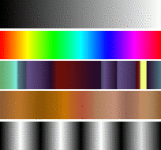
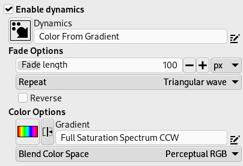
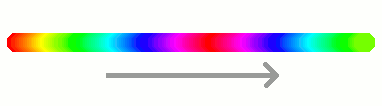
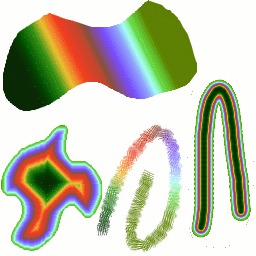

Figura 7.22. Alguns exemplos de degradês do GIMP

Gradients from top to bottom: FG to BG (RGB); Full Saturation Spectrum CCW; Nauseating Headache; Browns; Four Bars
Um degradê é um conjunto de cores dispostas em uma ordem linear. O uso mais básico de degradês é pela Ferramenta de Mistura, também conhecida como “ferramenta de degradê” ou “ferramenta de preenchimento com degradê”: funciona preenchendo a seleção com as cores de um degradê. Você tem muitas opções para escolher para controlar a forma como as cores do degradê serão dispostas dentro da seleção. Há também outras maneiras importantes para usar degradês, incluindo:
- Pintando com um degradê
-
Cada ferramenta de pintura do GIMP da a opção de usar as cores de um degradê. Isso permite que você crie pinceladas que mudam de cor conforme vai pintando.
- O filtro Mapear com degradê
-
This filter is in the Colors menu, and allows you to “colorize” an image, using the color intensity of each point with the corresponding color from the active gradient (the intensity 0, very dark, is replaced by the color at most left end of the gradient, progressively until the intensity is 255, very light, replaced by the most right color of the gradient. See Seção 8.39, “Mapear com degradê” for more information.
GIMP comes presupplied with a large number of gradients. You can also add new gradients that you create or download from other sources. You can access the full set of available gradients using the Gradients dialog, a dockable dialog that you can either activate when you need it, or keep around as a tab in a dock. The “current gradient”, used in most gradient-related operations, is shown in the Brush/Pattern/Gradient area of the Toolbox. Clicking on the gradient symbol in the Toolbox is an alternative way of bringing up the Gradients dialog.
Some quick examples of working with gradients (for more information see Gradient Tool) are:
-
Colocar um degradê na seleção:
-
Escolha um degradê
-
With the Gradient Tool click and drag with the mouse between two points of a selection.
-
As cores serão distribuídas perpendicularmente na direção do arrasto do mouse e de acordo com o comprimento do mesmo.
-
-
Pintando com um degradê:
You can also use a gradient with one of the drawing tools (e.g. Pencil, Paintbrush or Airbrush) if you switch on Enable dynamics and set Dynamics to Color From Gradient. In the next step, set the gradients length and the Repeat style in the Fade Options section, and select a suitable gradient in the Color Options section. Seção 3.2.6, “Opções de dinâmicas” describes these parameters in more detail.
The following example shows the impact on the Pencil tool.
Figura 7.24. Como utilizar rapidamente um degradê com uma ferramenta de desenho

Tool settings

Resulting succession of the gradients colors
-
Produções diferentes com o mesmo degradê:
Figura 7.25. Uso de degradês

Quatro formas de usar o degradê de “Tropical Colors” (cores tropicais): um preenchimento de degradê linear, um preenchimento de degradê usando “acompanha forma”, um traço pintado com cores de um degradê, e um traço pintado com um pincel difuso colorido usando o filtro Mapear com degradê.
Algumas coisas úteis para saber sobre degradês do GIMP:
-
The first gradients in the list are special: They use the colors from the Foreground/Background Colors Area in the Toolbox, instead of being fixed.
-
FG to BG (HSV Counter-Clockwise) represents the hue succession in a color wheel from the selected hue to 360°.
-
FG to BG (HSV Clockwise) represents the hue succession in a color wheel from the selected hue to 0°.
-
FG to BG (RGB) is the RGB representation of the gradient from the Foreground color to the Background color in Toolbox.
-
The FG to BG (Hard Edge) gradient generates a gradient from the foreground color to the background color, with hard-edged transitions in between.
-
With FG to Transparent, the selected hue becomes more and more transparent. You can modify these colors by using the Color Selector. Thus, by altering the foreground and background colors, you can make these gradients transition smoothly between any two colors you want.
-
The FG to Transparent (Hard Edge) gradient generates a gradient from the foreground color to transparency, with hard-edged transitions in between.
Using this gradient, you can generate patterns very quickly with the “Repeat” option, alternating repetitive colored shapes with full transparency over a given background. Works best with shapes like spiral, radial, square and linear.
-
-
Degradês podem envolver não apenas as mudanças de cor, mas também mudanças na opacidade. Alguns dos degradês são completamente opacos, outros incluem partes transparentes ou translúcidas. Quando você preencher ou pintar com um degradê não-opaco, o conteúdo pré-existente da camada ira aparecer através da pintura.
-
Você pode criar novos degradêspersonalizados, usando o Editor de degradês. Você não pode modificar os degradês que são fornecidos com o GIMP, mas você pode duplicá-los ou criar novos, e depois editá-los.
The gradients that are supplied with GIMP are stored in
a system gradients folder.
Gradients that you create are automatically saved in the
gradients folder of your personal
GIMP directory. Any gradient files (ending with
the extension .ggr) found in one of these
folders, will automatically be loaded when you start
GIMP. You can add more directories to the
gradient search path, if you want to, in the Gradients tab of the
Data Folders
section of the Preferences dialog.
GIMP can also load gradient files in SVG format, used
by many vector graphics programs. To make GIMP load an
SVG gradient file, place it in the
gradients folder of your personal
GIMP directory, or any other folder in your gradient
search path.
![[Dica]](images/tip.png)
|
Dica |
|---|---|
|
You can find a large number of interesting SVG gradients on the web, in particular at OpenClipArt Gradients [OPENCLIPART-GRADIENT]. |